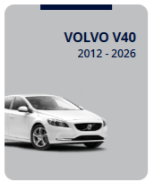

Диагностика
Сначала проверяем причины, потом предлагаем решение. Это помогает не менять исправные узлы и не тратить время клиента впустую.
Профильный сервисный центр для автомобилей Volvo: регламентное обслуживание, точная диагностика, ремонт ходовой части, тормозной системы и электроники. Работаем с проверенными моделями Volvo.



Volvo Center — профильный автосервис для владельцев Volvo, которым важны аккуратное обслуживание, понятные рекомендации и честная диагностика. Мы работаем только с моделями Volvo, которые представлены на сайте, сохраняя единый высокий стандарт обслуживания.
Для нас важно, чтобы клиент понимал, что происходит с автомобилем на каждом этапе. Мы не перегружаем процесс лишними услугами, а концентрируемся на том, что реально влияет на надёжность, комфорт и безопасность Volvo.
Сначала проверяем причины, потом предлагаем решение. Это помогает не менять исправные узлы и не тратить время клиента впустую.
Перед началом работ рассказываем, что обнаружено, что нужно сделать сейчас, а что можно отложить на следующий визит.
Ориентируемся на качественные оригинальные решения и проверенные расходники, подходящие под требования Volvo.
После ремонта автомобиль проходит финальную проверку, чтобы владелец получил машину в исправном и предсказуемом состоянии.
Проверяем электронные блоки, ошибки, параметры двигателя, трансмиссии, ABS, ESP и вспомогательных систем безопасности.
Меняем масло, фильтры и технические жидкости, оцениваем состояние узлов и напоминаем о следующих сервисных интервалах.
Диагностируем силовые агрегаты, систему охлаждения, коробки передач и связанные компоненты.
Устраняем стуки, вибрации и износ элементов ходовой части, возвращая автомобилю собранность и комфорт.
Обслуживаем колодки, диски, суппорты и тормозную жидкость, чтобы торможение оставалось стабильным в городе и на трассе.
Проверяем аккумулятор, шины, климатическую систему, охлаждение, жидкости и подвеску перед зимой, летом или поездкой.
Вы оставляете обращение, а мы уточняем модель Volvo, пробег и симптомы.
Проводим первичную проверку электроники, ходовой части, тормозов и расходников.
Объясняем, что требует срочного решения, а что можно перенести без риска.
Выполняем работы, проверяем результат и передаём автомобиль владельцу.
Привозил XC60 на диагностику и ТО. Понравилось, что всё объяснили спокойно и без лишнего давления. Единственный нюанс — в сезон запись не всегда на следующий день, но по качеству работы вопросов не осталось.
Обращалась с XC90 перед поездкой. Проверили тормоза, подвеску и жидкости, дали понятные рекомендации. Хотелось бы чуть быстрее получать итоговый отчёт, но в остальном сервис оставил очень хорошее впечатление.
Приезжал на S90 с шумом в подвеске. Проблему нашли быстро, всё согласовали заранее, после ремонта машина стала заметно тише. Чувствуется, что здесь действительно понимают Volvo.
Делали сезонную проверку V60 I. Всё аккуратно и по делу, без навязывания лишнего ремонта. Цены не самые низкие, но за такой уровень обслуживания это ожидаемо.
Понравилось отношение: нормальная диагностика, адекватные рекомендации и никаких попыток продать лишнее. Для Volvo это особенно важно, потому что не хочется доверять машину случайным мастерам.
Привозила V40 на подготовку к зиме. Всё сделали аккуратно, рассказали, что лучше проверить на следующем визите. Отдельно отмечу чистую приёмку и вежливое общение.
Напишите нам, если нужен плановый визит, диагностика или ремонт Volvo. Мы уточним модель автомобиля, симптомы и подберём удобное время посещения Volvo Center.
Мы свяжемся с вами в ближайшее время.
Volvo Center принимает автомобили Volvo XC60 I, XC60 II, XC90 I, XC90 II, S60 I, S60 II, S60 III, S90 II, V60 I и V40.
Проводим. Проверяем электронные блоки, ошибки и параметры основных систем, чтобы точно определить источник неисправности.
Можно. Часто делаем короткую проверку перед дорогой: тормоза, подвеска, жидкости, аккумулятор и климатическая система.
В работе ориентируемся на качественные комплектующие и решения, соответствующие требованиям Volvo, особенно для ответственных узлов.
Гарантия действует на основные работы и установленные детали, а срок зависит от вида обслуживания и выбранных комплектующих.
Да, и это особенно удобно перед сезоном или длительной поездкой, когда нагрузка на сервис выше обычного.